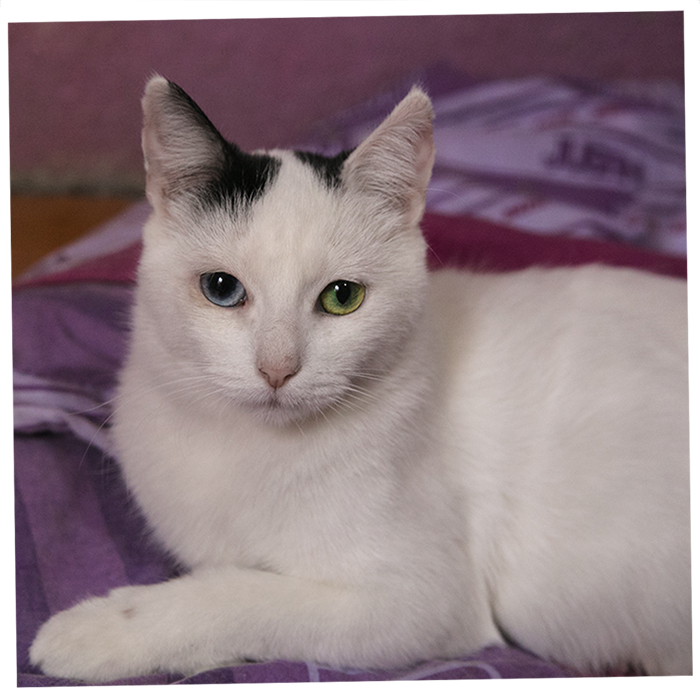

Gatos en adopcion!
Nuestros gatos que buscan familia!
Es una organización sin fines de lucro, dedicada al rescate, rehabilitación y reubicación de gatos abandonados. Realiza, operativos de esterilización y jornadas de adopción todas las semanas. Todos los gatos que entrega están esterilizados desde los dos meses de edad. Mantiene dos albergues de gatos y una red de hogares temporales, que acogen a los gatos rescatados en espera de su adopción definitiva.

Joadiño

Jony boy